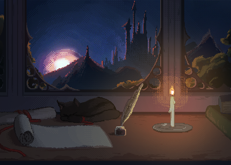

Best viewed on a laptop/desktop screen at full width, in a Chromium-based browser (Chrome, Edge, Brave) — the game runs at a fixed 1280×720 to keep controls properly aligned. On a narrower screen, scroll the frame above horizontally.